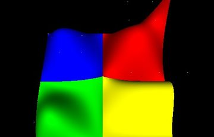

OpenGLContext-Specific Documentation
Start with the Rendering documents if you want to understand how a frame is drawn, Supporting Features for the systems that run beside the renderer — how the player moves, what the world does, what it sounds like — and Content for loading and displaying models and worlds. The NeHe tutorial translations are a good starting point for beginning OpenGL programmers.

Terrain & vegetation 
Water 
Roads 
Navigation meshes 
Swept geometry 
NURBS surfaces 
Text 
HUD & overlay UI 
Editing
- Tutorials -- Documentation for users unfamiliar with OpenGL
- NeHe translations
- Introduction to Shaders
- Special Effects
- Rendering
- Flat Rendering -- The current client-side "flat" rendering pass used for both profiles
- Core-Profile Rendering -- The shader-based core-profile pass, its shader programs and passes
- Physically Based Rendering -- The PBR metallic/roughness pass, materials and image-based lighting
- The PBR Uber-Shader -- Line-by-line walkthrough of the fragment shader: textures, uniforms and lobes
- GLSL in OpenGLContext -- What the engine supplies a shader, and how to move one between GLSL 1.20 and the 330 the engine ships
- Shadows -- Dynamic shadow mapping shared by the core lighting and PBR passes
- Instanced Geometry -- Collapsing many copies of one shape into a single draw call: how grouping, per-instance data, picking, caching and cluster culling work
- Overlay UI -- Panels drawn over a
live frame and driven by the pointer: a settings screen generated
from the ContextDefinition's fields, key rebinding, dialogs, a
scrolling licence notice, a console, and nine-slice skinning.
The whole interface scales with the window, so it stays readable
and hittable at 4K -- plus the
oglc-ui-demodemo - HUD & Developer Overlay -- Screen furniture drawn over a live world and never taking an event: a reticule that belongs to the weapon, meters that colour themselves from thresholds, an icon-and-number readout and a fading message queue -- plus the developer overlay, fed by registered providers, where the frame rate is now drawn
- Session Telemetry -- Recording a
whole session to one file -- every input, every frame time, every
exception with its traceback, and the application's own description
of itself -- then reading it back with
python -m OpenGLContext.telemetryor replaying it, so a failure somebody else met runs again here - Recording Video -- Writing the frames a context draws to an H.264 file, straight from the framebuffer to the GPU's video encoder, on a clock that counts frames
- Packaging an Application -- Handing
somebody a game with no Python to install: freezing a bundle with
PyInstaller, which the engine's own hooks make work, and building a
Debian package that carries its own interpreter under
/optwithoglc-deb - Swept Geometry & Tessellation --
Lathes, spirals, screws, tubes and VRML97's
Extrusion, generated as vertex arrays and drawn in a core profile: join styles and miter limits, spline paths sampled to a curvature tolerance, rotation-minimizing frames, closed loops, and the constrained Delaunay tessellator that fills their caps and any other outline you hand it - NURBS Surfaces & Curves -- Surfaces, trimmed surfaces and curves from control nets and knot vectors, evaluated to indexed triangle meshes with no GL involved: rational weights, per-control-point colour, trimming loops triangulated to the sampling rate, and a coarser tessellation for a surface far from the camera
- Particle Effects -- Fire, smoke, sparks, explosions and trails as camera-facing quads in one instanced draw: a numpy pool with a packed live set, emitters as declared nodes, life curves as uniforms, and named presets
- Terrain & Landscapes -- Which of the two paths a landscape wants, and the one that needs no streaming: a height field drawn as one splat-textured mesh, the control map deciding which ground material shows where, chunked colliders a car drives on, and the mix-in that walks it
- Streamed 3D Tiles -- A world too big
to load, as an octree of glTF tiles: screen-space-error LOD,
frustum-culled paging under a memory budget, per-tile walkable
colliders, procedural & DEM heightmaps, caves and overhangs, and
the
oglc-terrainviewer -- plus what a third-partytileset.jsonis allowed to reach (support is experimental) - A city from OpenStreetMap -- Building footprints extruded to a 3D Tiles dataset and streamed: the vector tiles the generator reads, laying the output out so its URIs resolve, giving it ground to stand on, and walking the result
- Vegetation -- A quarter of a million trees as a table and an instanced set chosen against the view, ground cover scattered on a world-anchored grid rather than stored, the canopy shade everything standing on the ground reads, and where a plant meets that ground
- Baking a World -- Writing glTF from the scenegraph, and turning an authored world -- terrain, scattered vegetation, placed meshes -- into a streamable 3D Tiles octree
- Roads -- A centreline and a cross-section profile swept into a drivable surface, with a wet/dry tarmac material, and how a baked road carries its centreline to the game that streams it
- Water -- Lakes, rivers and choppy weather from one wave field taken from world position and time, moved on the card by the vertex shader, with glints as a river's level of detail -- and water as a medium you are inside, closing the view in and muffling the mix
- Building an Editor -- Tool modes that get the pointer before the camera does, the point on the world under the cursor, dragging against a plane, a tri-axis handle that holds a drag to one axis, and an orthographic plan view to draw on
- Supporting Features
- Movement Modes & Navigation -- Walking, flying, swimming and mouse-look as declared nodes: sampled input, key bindings a settings screen can rewrite, world-imposed modes and pointer capture
- Navigation Mesh -- Where a character can walk, worked out from the collision mesh at load time rather than baked beside the level: walkable cells by slope, a corridor found by A* across them, and the route pulled taut through the portals so it is the line a person would take
- Physics & Collision -- Real-time rigid-body physics built on the OMI glTF model: collision, gravity zones, triggers, joints, shape cooking, a character controller with safe viewpoint binding, a motion debug overlay, and walking as a capability of every interactive context
- Spatial Audio -- Sound placed in the
scene on glTF's
KHR_audio_emittermodel: distance curves, directional cones, equal-power panning, a fixed voice pool with priority stealing, an underwater muffle, and silence as a first-class backend. The engine is the standaloneomi_audiopackage; OpenGLContext supplies the scenegraph nodes and the per-context engine - Content
- The viewer --
oglc-view: one command that opens a glTF model, a VRML97 world, an OBJ or a streamed 3D Tiles dataset, its library of samples, its screens and controls, embedding it as a component and adding a format - Embedding a view -- The engine as one widget in a Tk, Qt or wx application: which call puts the view in the layout, which of the two loops does the driving, the scenegraph as a tree beside it, following a scene that changes on a worker thread, and a sample program in each toolkit
- Loading glTF -- The glTF 2.0 loader: what it supports, using it from your own code, driving a model by the names it was authored under, and the library a package's own art loads through
- Rigged characters -- Which joint is
which bone, playing more than one clip at once, hanging a weapon on
a hand, and
oglc-character-sheetfor looking at every clip at once - Rendering Text -- The Text and FontStyle nodes, the font providers, and extruded solid text
- Using VRML97 -- Using the (partial) VRML97 loader and the nodes it creates
- Built with it
- GLinting Steel -- A racing game on a world too big to load: which engine capability each part of it uses, what is left over that makes it a game, and how a picture of it is taken twice the same
- The GLinting Steel track editor -- Drawing a circuit on a landscape and baking a world to drive: a route as a plan rather than a road, sculpting the ground the road settles onto, reading relief off a map, and what a project holds
- Event Model -- The event model which manages changes to the VRML97 scenegraph
- Testing What You Draw -- A hidden GL context in the test process, the pytest fixtures that hand one over, running a whole application in a child process, and comparing the pixels that came back
- Rendering Offscreen -- A GL context with no window and no display server: taking a GPU directly through EGL, which device gets picked and how to pin one, driving a scene with events nobody typed, and what to use instead on Windows and macOS
- Reference
- Environment Variables -- Every switch that changes what a frame looks like or how it is produced, in one table: what it does, what it accepts, what it defaults to, and which page explains the feature behind it. Also how a value that is neither a yes nor a no is treated, and how to build a clean environment for a render that has to be reproducible
- PyDoc References (Automatically generated documentation)
- OpenGLContext
- OpenGLContext_qt (PyQt4 context, a separate module due to licensing restrictions)
- PyVRML97 (module vrml)
- TTFQuery (module ttfquery)
- PyOpenGL (module OpenGL)
- Structural Overview -- OpenGLContext's architecture and implementation
- Rendering Text -- Overview of the Text and FontStyle scenegraph nodes, general notes regarding support of text in OpenGLContext
- Using NumPy Arrays -- Array math within OpenGLContext and PyOpenGL: creating arrays, the dtypes that match each GL type, slicing, the vector utilities, and handing an array to the driver as geometry